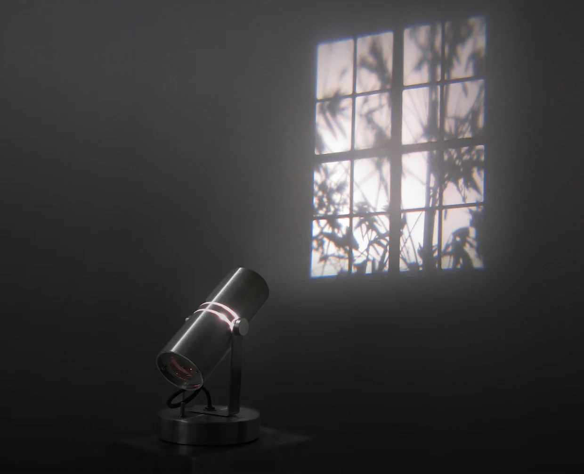
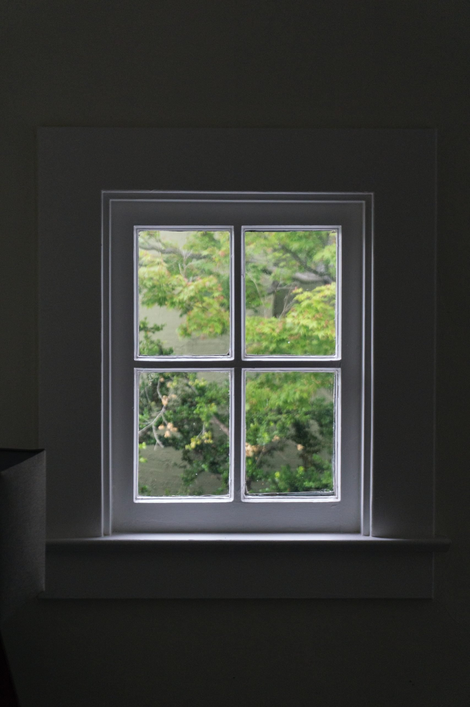
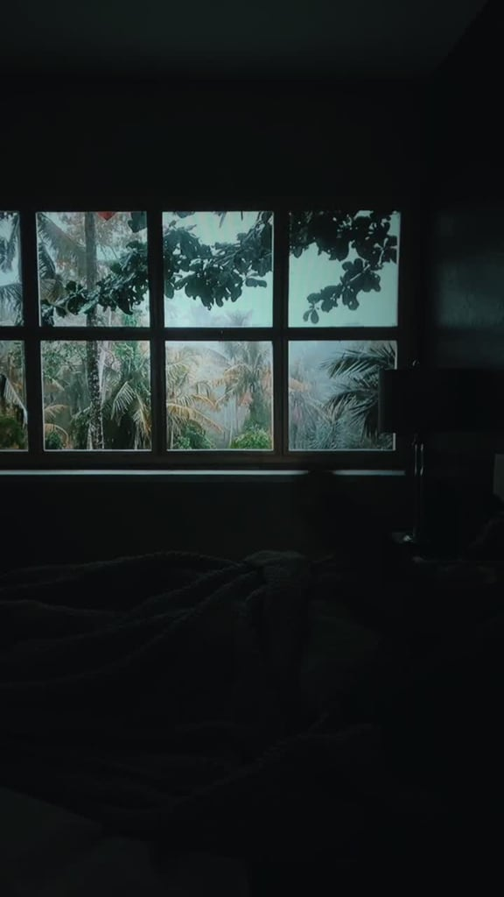
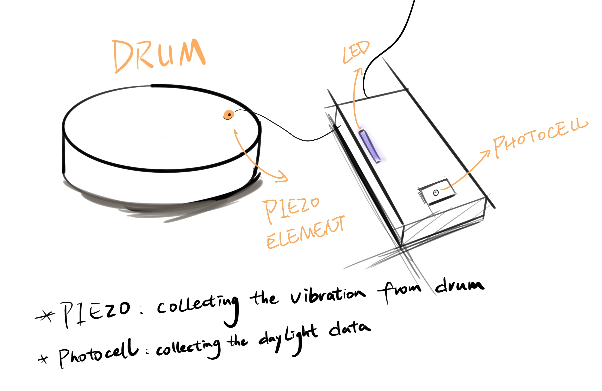
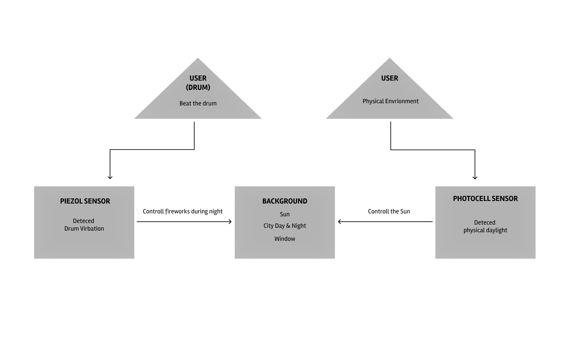
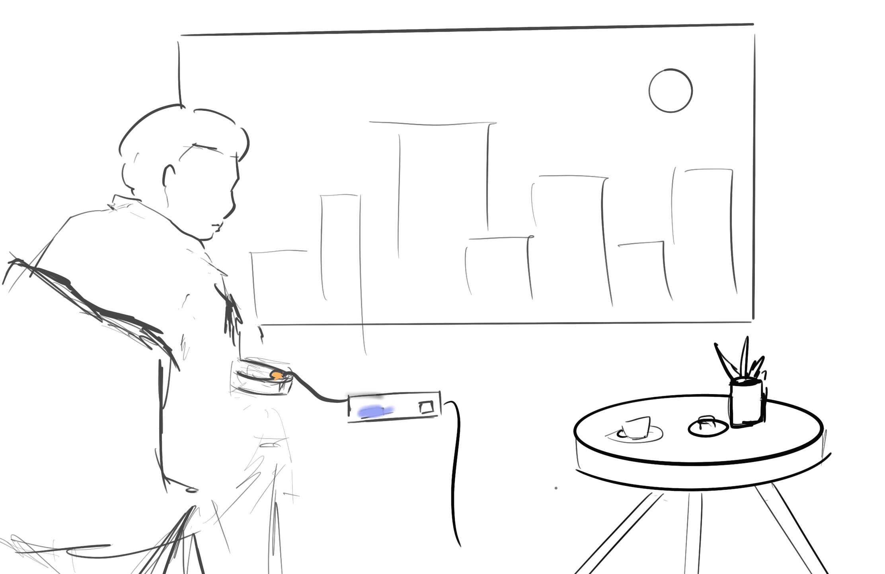
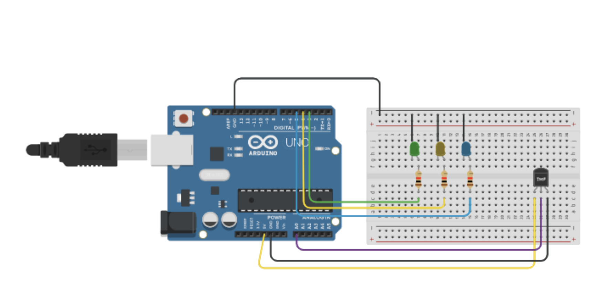

Project 2 : Virtual Window
An interactive project where use processing to control a virtual window in your home.
Concept
It is a virtual window that can interact with the scenery using physical sensors. Using processing and particle board, the product and the program are connected together so that users can see different scenery at home with a projector.
Impetus
While I was working on this project, the hashtag "#FakeWindowChallenge" was trending on TikTok. I found that during the epidemic, people were seeking more quality of life and entertainment at home and wanted to see beautiful scenery without leaving their homes. So I wanted to design a virtual window that could be interacted with to give users a more exciting experience.



System Diagrams



Week1: USING TEMPERATURE SENSOR
The first week I made elements of stars and fireworks and intended to control them with temperature sensors. But then I realized that the temperature does not change very obviously in the actual environment in normal life, so I gave up using temperature as the variable data.



Me tried to change the tempreature using a -10 °C Jagermeister
Week2: CREATE DETAIL ELEMENTS
During the second week, I choose to design all the visual elements and put them together as a draft program with setting up sensors and particle board.

Fireworks
Stars


Cityscape (Day/Night)
Week3: FINAL SENSOR SETUP
The last week I worked mainly on connecting sensors and programs. The light sensor to control the sun and the piezo sensor to collect vibration data for the fireworks.